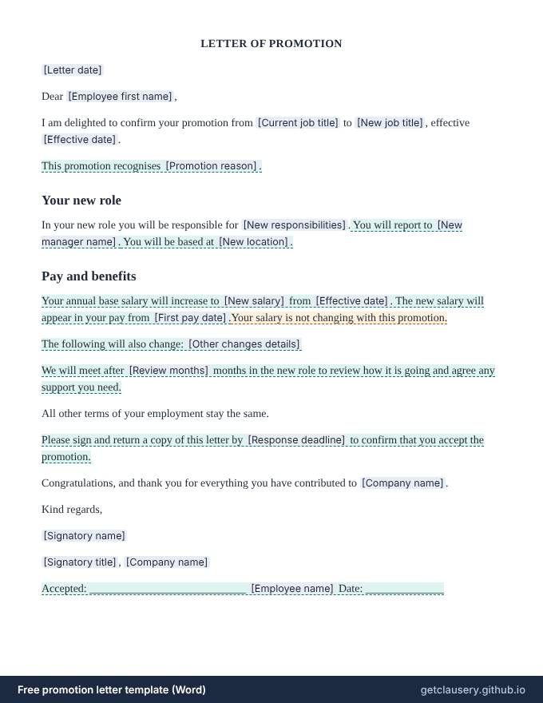

Promotion letter template — free, editable .docx
A letter confirming an employee's promotion: the new title and start date, what the role involves, any new manager, location or salary, and an optional review after the first few months.

Free, with unlimited documents and no sign-up. Your answers stay in your browser. Who it is for: Managers and HR teams who want every promotion confirmed in writing, with the pay change and start date stated plainly.
Updated · Word (.docx) · Free to use and adapt
Need more than one? Download all 87 templates as one .zip file.
What is in the promotion letter
- Current and new job title, and the effective date
- Optional reason for the promotion
- New responsibilities
- Optional new manager and new location
- New salary and the first pay date, or a plain statement that pay is not changing
- Optional other changes, such as benefits or hours
- Optional review after a few months in the role
- Optional acceptance by a deadline, with a signature line
Read the full template
This is the complete wording. [Labels] are filled in from your answers, and highlighted text only appears when it applies; hover over it to see when.
LETTER OF PROMOTION
[Letter date]
Dear [Employee first name],
I am delighted to confirm your promotion from [Current job title] to [New job title], effective [Effective date].
This promotion recognises [Promotion reason].
Your new role
In your new role you will be responsible for [New responsibilities]. You will report to [New manager name]. You will be based at [New location].
Pay and benefits
Your annual base salary will increase to [New salary] from [Effective date]. The new salary will appear in your pay from [First pay date].Your salary is not changing with this promotion.
The following will also change: [Other changes details]
We will meet after [Review months] months in the new role to review how it is going and agree any support you need.
All other terms of your employment stay the same.
Please sign and return a copy of this letter by [Response deadline] to confirm that you accept the promotion.
Congratulations, and thank you for everything you have contributed to [Company name].
Kind regards,
[Signatory name]
[Signatory title], [Company name]
Accepted: ____________________________ [Employee name] Date: ______________
The questions you answer
Clausery turns the template into a short questionnaire. Optional parts only appear when they apply.
| Question | Type | Asked when |
|---|---|---|
| Letter date | Date | Always |
| Employee first name | Short text | Always |
| Current job title | Short text | Always |
| New job title | Short text | Always |
| Effective date | Date | Always |
| Has reason | Yes / no | Always |
| Promotion reason | Long text | If “Has reason” is yes |
| New responsibilities | Long text | Always |
| Has new manager | Yes / no | Always |
| New manager name | Short text | If “Has new manager” is yes |
| Has new location | Yes / no | Always |
| New location | Short text | If “Has new location” is yes |
| Has salary change | Yes / no | Always |
| New salary | Money | If “Has salary change” is yes |
| First pay date | Date | If “Has salary change” is yes |
| Has other changes | Yes / no | Always |
| Other changes details | Long text | If “Has other changes” is yes |
| Has review period | Yes / no | Always |
| Review months | Number | If “Has review period” is yes |
| Needs acceptance | Yes / no | Always |
| Response deadline | Date | If “Needs acceptance” is yes |
| Company name | Short text | Always |
| Signatory name | Short text | Always |
| Signatory title | Short text | Always |
| Employee name | Short text | If “Needs acceptance” is yes |
Prefer to start from your own wording? Download the Word file, edit it, keep the {tags}, and upload it to Clausery. See the template syntax.
Questions
Should a promotion be confirmed in writing?
Yes. A letter records the new title, pay and start date, so payroll gets it right and nobody argues later about what was agreed. In the UK, changes to an employee's job title or pay must be confirmed in writing within one month.
Can I promote someone without a pay rise?
Yes, though it is worth explaining why. The letter says plainly when the salary is not changing. For a pay rise without a new title, use the salary increase letter instead.
Does the employee have to accept a promotion?
A promotion changes the terms of the job, so it is sensible to get written agreement, especially if duties, hours or location change. Tick the acceptance box to add a reply-by date and a signature line.
Guide: How to write a job offer letter (with a free template)
Related templates
Browse all 87 free templates by category
This template is a general sample and not legal advice. Laws vary by jurisdiction; have it reviewed before use.